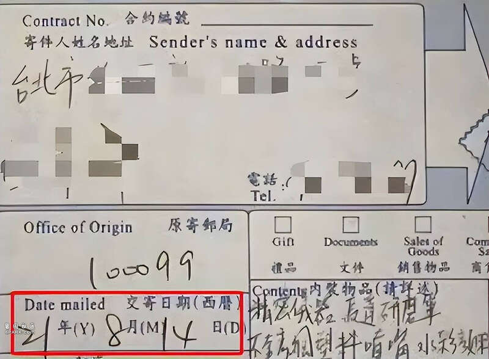
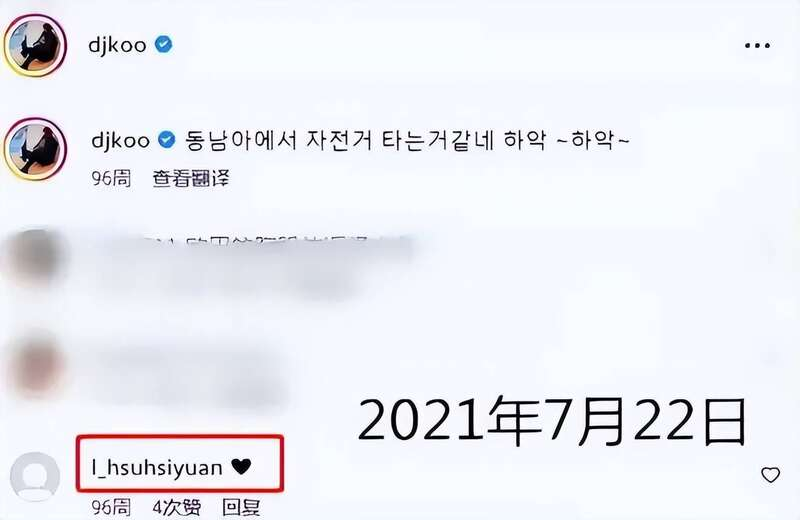
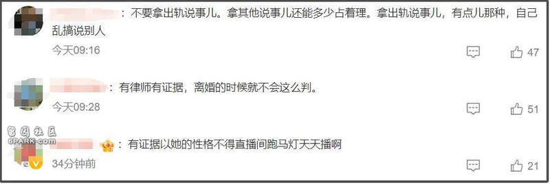
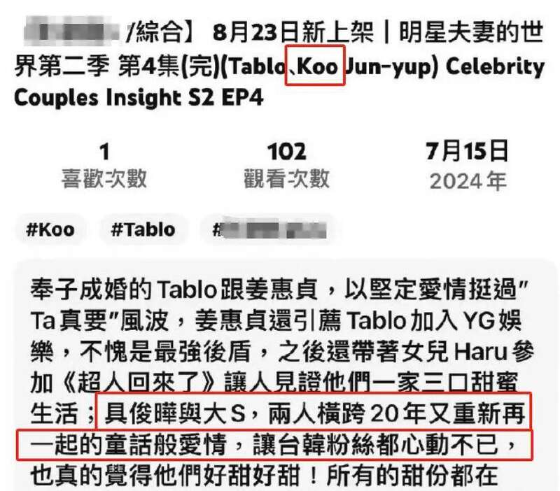
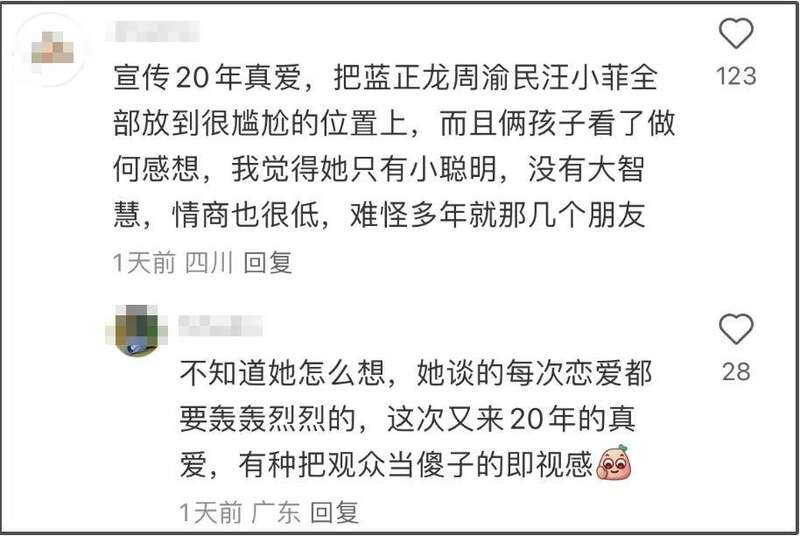
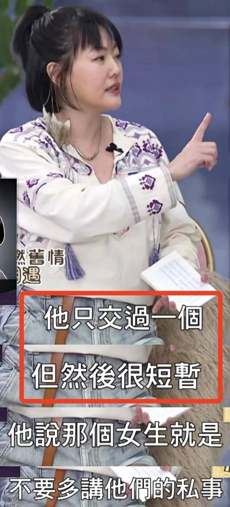
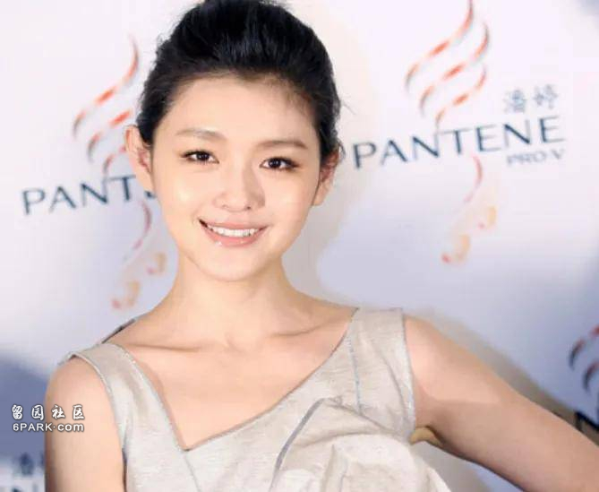
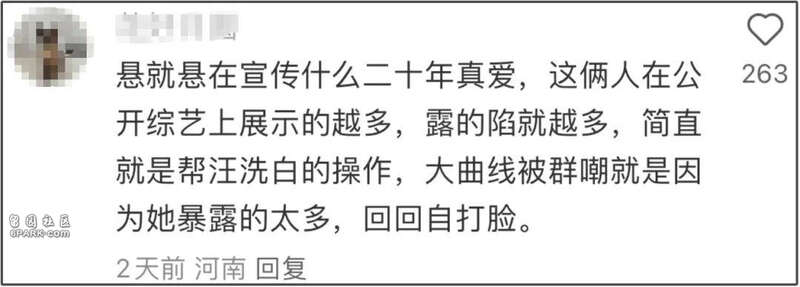

张兰又忍不住了！汪小菲和大S离婚已经快三年了，也吵了三年。从财产到孩子抚养权，官司没少打，张兰也多次提到大S出轨，近日在回复网友的时候再度爆料称大S出轨，引起网友热议。
有网友在张兰的评论区留言表示同情大S，认为她在婚姻里付出很多，有关钱的问题也应该按照离婚协议，怎么签就怎么来。随后张兰在评论区怒怼网友，称（大S）17年就出轨了，有律师证据。还称大S引狼入室，让大家想一下小玥儿的危险。
这个爆料一出也引起不少争议，网友说有证据就直接去告啊，17年的时候大S还在北京，18年就怀孕了。之前汪小菲在庭上拿出的给具俊晔寄纹身机的时间是在2021年，疑似大S小号和具俊晔互动也是在21年，17年到底有什么证据呢？


不过张兰爆料完就没再回复了，所谓的证据也没有消息了。有网友表示真要是有证据，那当年离婚的时候就不会那么判了。

张兰这边虽然暗戳戳的又想搞事，但汪小菲和大S这两人表面似乎还比较和平。汪小菲蜜月之后又带孩子去澳门玩了，马筱梅还给小玥儿买了新衣服，打扮得很漂亮。
大S之前也带孩子去韩国游玩，但回国之后似乎具俊晔并没有跟着一起回来，而是继续留在韩国搞事业，和大S再度分隔两地了。
具俊晔在韩国也接到了不少工作，官宣了一个音乐节，还被邀请去了一档恋情综艺，貌似又要消费他和大S横跨20多年的婚姻故事。这也引起了网友注意，难道上次大S去韩国除了带孩子玩之外，还是去录综艺的吗？

但也有网友表示大S真要是和具俊晔上了婚综，那估计蓝正龙、周渝民和汪小菲都坐不住了。宣传20多年真爱，这不就把大S的前任都放到了尴尬的位置上了吗？

而且说是20多年真爱，但具俊晔在这期间恋爱、相亲也没停，还上过韩国的相亲综艺，中间也谈过几个女朋友。当初还是他先和大S提的分手，现在又想起来营销20多年真爱了？网友吐槽无非还是为了挣钱。

大S虽然在台娱可能人气稍低了一些，而且因为离婚风波的原因，风评也不是很好，但是韩网还是把她奉为国际女神的，具俊晔也刚好可以借着结婚炒作热度。

但之前大S和具俊晔在采访的时候，就曾经把第一次旅游的时间说漏嘴了，当时他们说的是十年前在东京旅游，当时大S还是已婚状态呢！这次还要再出来宣传，不怕说多了，又引起网友猜测吗？

张兰这边已经曝出猛料了，不知道大S会不会出面回应呢？这两家也真是打起来没完没了，孩子都长大好几岁了，就希望大S和汪小菲能够尽快把离婚的事解决清楚，不要再给孩子带来影响吧。